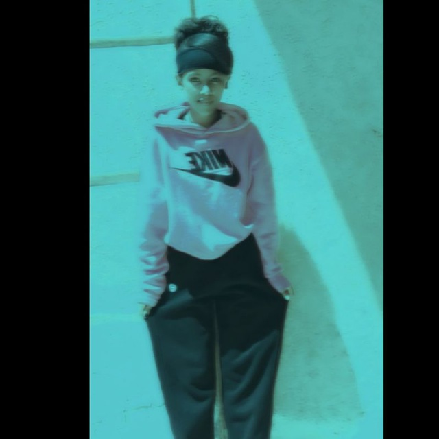
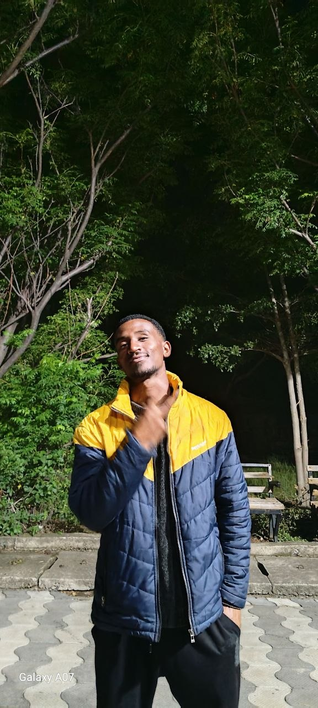
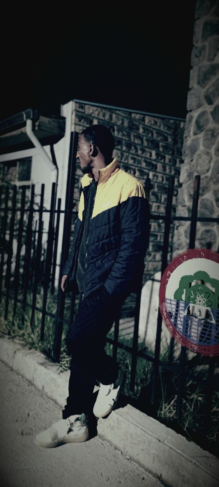

2019
Before the new year begins…አዲሱ ዓመት ከመጀመሩ በፊት…
I made something small for you.ላንቺ ትንሽ ነገር ሰርቼልሻለሁ።
Keep going…ቀጥይ…
there's something waiting for you.የሚጠብቅሽ ነገር አለ።
Touch it.ንኪው።
Some people walk in quietly,
and somehow end up mattering the most.አንዳንድ ሰዎች ጸጥ ብለው ይገባሉ፣
ሳይታወቅ ግን በጣም አስፈላጊ ይሆናሉ።
There is one more thing here.እዚህ ሌላ ነገር አለ።
Find it

You found something.አንድ ነገር አገኘሽ።
Someone I'm grateful to know.የማውቃት አንድ ሰው ስላለ አመሰግናለሁ።

And someone who wanted to build
this little world, just for you.እና ላንቺ ብቻ ይህን ትንሽ ዓለም
ለመስራት የፈለገ ሰው።
Some moments don't need many words.
Touch the frame
People build a lot of things with code.ሰዎች በኮድ ብዙ ነገሮችን ይገነባሉ።
Apps. Systems. Small, quiet ideas.አፕሊኬሽኖች። ሲስተሞች። ትንንሽ ጸጥ ያሉ ሀሳቦች።
But some things aren't built with code at all —
they're
built with trust, patience, and two people choosing to try.ግን አንዳንድ ነገሮች በኮድ
አይገነቡም —
በመተማመን፣ በትዕግስት እና ሁለት ሰዎች ለመሞከር በመምረጥ ይገነባሉ።

Before the last page, one more hello.
Happy New Year 2019
እንኳን ለ2019 ዓ.ም አደረሰሽ ❤️
Whatever this year brings you —
I hope it's happiness, peace,
and good
reasons to smile.ይህ ዓመት የሚያመጣው ምንም ይሁን —
ደስታ፣ ሰላም እና የምትስቂበት
በቂ ምክንያቶች
እንዲኖሩሽ እመኛለሁ።
And selfishly, I hope I get to be part of some of those moments.እና በራስ ወዳድነት፣ ከእነዚያ አፍታዎች ውስጥ የተወሰነውን አካል እንድሆን ተስፋ አደርጋለሁ።
— made with code, but mostly with heart.በኮድ የተሰራ፣ ነገር ግን በአብዛኛው በልብ።